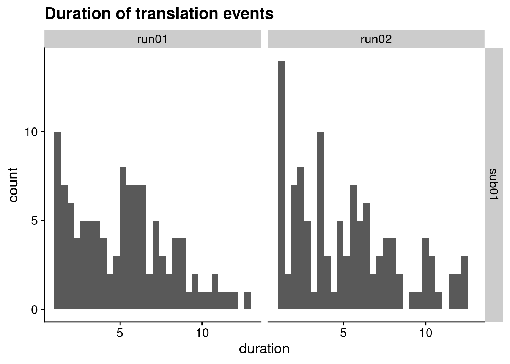
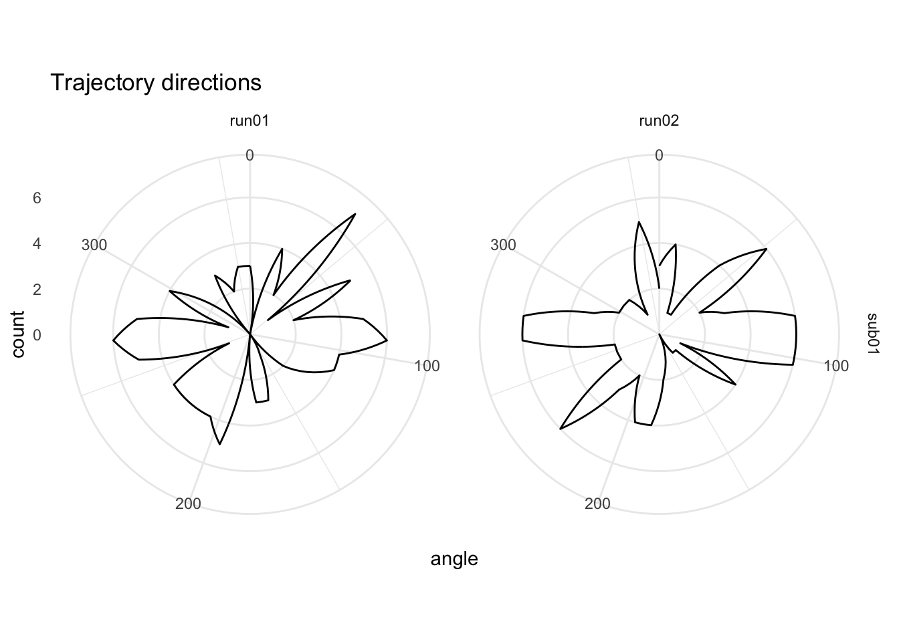

2 Example Data
To run the analysis, we want to use example data provided with the GridCAT toolbox.
2.1 Download Example Data
# create data folder if needed
if(!dir.exists(here("data"))){dir.create(here("data"))}
# download the zipped example data
zip_fn <- here("data", "example_data.zip")
if (!file.exists(zip_fn)){
# sometimes download takes longer than default of 60s, so set to 300s
options(timeout=300)
download.file(url="https://www.nitrc.org/frs/download.php/9738/ExampleData.zip//?i_agree=1&download_now=1",
destfile = zip_fn)
# unpack
unzip(zip_fn, exdir = here("data"))
}2.2 Rearrange data
To make things look a bit more realistic, let’s rearrange some of the folders. For now, we will only be operating with one subject that has two runs.
subjects <- c("sub01")
runs <- c("run01", "run02")# realignment parameters
if(!dir.exists(here("data", "AdditionalRegressors", "sub01"))){
dir.create(here("data", "AdditionalRegressors", "sub01"), recursive = TRUE)
file.copy(from = list.files(here("data", "ExampleData", "AdditionalRegressors"), full.names = TRUE),
to = here("data", "AdditionalRegressors", "sub01"))
invisible(file.rename(from=list.files(here("data", "AdditionalRegressors", "sub01"), full.names = TRUE),
to = here("data", "AdditionalRegressors", "sub01",
paste0("realignmentParameters_", runs, ".txt"))))
}
# event tables
if(!dir.exists(here("data", "EventTables", "sub01"))){
dir.create(here("data", "EventTables", "sub01"), recursive = TRUE)
file.copy(from = list.files(here("data", "ExampleData", "EventTables"), full.names = TRUE),
to = here("data", "EventTables", "sub01"))
invisible(file.rename(from=list.files(here("data", "EventTables", "sub01"), full.names = TRUE),
to = here("data", "EventTables", "sub01", paste0("eventTable_", runs, ".txt"))))
}
# EC ROIs
if(!dir.exists(here("data", "masks", "ROI_masks"))){
dir.create(here("data", "masks", "ROI_masks"), recursive = TRUE)
file.copy(from = list.files(here("data", "ExampleData", "ROI_masks"), full.names = TRUE),
to = here("data", "masks", "ROI_masks"))
}
# fMRI data run 1
if(!dir.exists(here("data", "FunctionalScans", "3D", "sub01", "run01"))){
dir.create(here("data", "FunctionalScans", "3D", "sub01", "run01"), recursive = TRUE)
invisible(file.copy(from = list.files(here("data", "ExampleData", "FunctionalScans", "run1"), full.names = TRUE),
to = here("data", "FunctionalScans", "3D", "sub01", "run01")))
}
# fMRI data run 2
if(!dir.exists(here("data", "FunctionalScans", "3D", "sub01", "run02"))){
dir.create(here("data", "FunctionalScans", "3D", "sub01", "run02"), recursive = TRUE)
invisible(file.copy(from = list.files(here("data", "ExampleData", "FunctionalScans", "run2"), full.names = TRUE),
to = here("data", "FunctionalScans", "3D", "sub01", "run02")))
}2.3 Event Tables
The event tables in the example data are in a slightly strange format with some missing values (i.e. no angle information for feedback events). Because these missing values are not NAs but literally empty, loading the files results in warnings about parsing issues. We write them to a file where the missing values are replaced with NAs.
# initialize empty tibble to collect all event tables
event_table_full <- tibble()
for (i_sub in subjects){
for (i_run in runs){
# read the data and add column names
fn <- here("data", "EventTables", i_sub, paste0("eventTable_", i_run, ".txt"))
event_table <- read_delim(fn, delim = ";", col_names = FALSE, col_types = c("fddd"))
colnames(event_table) <- c("name", "onset", "duration", "angle")
# write to file
fn <- here("data", "EventTables", i_sub, paste0("eventTable_", i_run, "_jb.txt"))
event_table %>%
write_delim(file = fn, delim = "\t", col_names = TRUE)
event_table <- event_table %>% mutate(subID = i_sub, run = i_run)
event_table_full <- rbind(event_table_full, event_table)
}
}## Warning: One or more parsing issues, see `problems()` for details
## One or more parsing issues, see `problems()` for detailshead(event_table_full)## # A tibble: 6 × 6
## name onset duration angle subID run
## <fct> <dbl> <dbl> <dbl> <chr> <chr>
## 1 translation 3.00 5.90 175. sub01 run01
## 2 translation 17.9 3.43 275. sub01 run01
## 3 feedback 24.0 2.03 NA sub01 run01
## 4 translation 26.1 4.08 58.6 sub01 run01
## 5 translation 31.5 3.23 58.6 sub01 run01
## 6 translation 35.9 3.11 112. sub01 run01For each translation (navigation) event, the event table has a duration and and angle value. As we don’t have the raw navigation data, all we can do here is plot overview of the lengths and directions of the trajectories.
When working with actual data, we will have to make decisions about how to define a trajectory event and how to label it with an angle. This is particularly complex if participants travel in long paths with curves so that they navigate in multiple directions in a translation event. We might want to do some reading here to check how other people did this.
2.3.1 Trajectory duration
# we are only interested in the trajectory events
trajectory_events <- event_table_full %>% filter(name == "translation")
# histogram of durations
ggplot(trajectory_events, aes(x=duration)) +
geom_histogram(bins=30) +
facet_grid(subID ~ run) +
ggtitle("Duration of translation events") +
theme_cowplot()
2.3.2 Angular Sampling
One thing we want to be sure of is that all trajectory directions were sampled somewhat evenly. To do visualize the angular sampling, we plot a polar histogram with 36 bins (10 degree width).
# make polar histogram across trajectory event angles
ggplot(trajectory_events, aes(x=angle)) +
coord_polar() +
scale_x_continuous(limits = c(0,360)) +
geom_freqpoly(bins = 36) +
facet_grid(subID ~ run) +
labs(title = "Trajectory directions") +
theme_minimal()## Warning: Removed 2 row(s) containing missing values (geom_path).
We can also test statistically if our angular sampling deviates from uniformity using a Rayleigh’s test. This test is implemented below for the entire set of samples (i.e. collapsed across runs).
# Rayleigh test of uniformity
circular::rayleigh.test(circular(trajectory_events$angle, type="angles", units = "degrees"))##
## Rayleigh Test of Uniformity
## General Unimodal Alternative
##
## Test Statistic: 0.0378
## P-value: 0.72992.4 fMRI
2.4.1 Merge images of each run
We have two runs of fMRI data from a navigation task. Because the toolbox is built for SPM, each volume is a separate file. Because this is annoying, let’s merge the images of each run to one 4-D file.
for (i_sub in subjects){
for (i_run in runs){
# create folder for 4D images if necessary
fmri_4d_dir <- here("data", "FunctionalScans", "4D", i_sub, i_run)
if (!dir.exists(fmri_4d_dir)){dir.create(fmri_4d_dir, recursive = TRUE)}
# merge the individual niftis into 4D timeseries
fn <- file.path(fmri_4d_dir, paste0(i_run, ".nii.gz"))
if (!file.exists(fn)){
# find all the files and merge them using fslmerge
in_files <- dir(here("data", "FunctionalScans", "3D", i_sub, i_run),
full.names = TRUE)
fslmerge(in_files, outfile = fn,
retimg = FALSE, direction = "t", verbose = FALSE)
# let's have a look at the first volume of the 4D image
run_nii <- readNIfTI2(fn)
ortho2(run_nii[,,,1], add.orient = TRUE)
}
#system(sprintf("fslmerge -tr %s %s 1.5", fn, fn))
}
}2.4.2 Calculate tSNR
calc_tSNR <- function(fourD_fn=NULL, tMean_fn=NULL, tStd_fn=NULL, tSNR_fn=NULL){
# calculate temporal mean for each voxel
fslr::fsl_maths(file = fourD_fn, opts = "-Tmean", outfile = tMean_fn,
verbose = FALSE, retimg = FALSE)
# calculate temporal mean for each voxel
fslr::fsl_maths(file = fourD_fn, opts = "-Tstd", outfile = tStd_fn,
verbose = FALSE, retimg = FALSE)
# calculate tSNR for each voxel
fslr::fsl_div(file = tMean_fn, file2 = tStd_fn, outfile = tSNR_fn,
verbose = FALSE, retimg = FALSE)
}
for (i_sub in subjects){
for (i_run in runs){
# create folder for SNR images if necessary
snr_dir <- here("data", "snr", i_sub, i_run)
if (!dir.exists(snr_dir)){dir.create(snr_dir, recursive = TRUE)}
if (!file.exists(file.path(snr_dir, "tSNR.nii.gz"))){
# calculate tSNR
calc_tSNR(fourD_fn = here("data", "FunctionalScans", "4D",
i_sub, i_run, paste0(i_run, ".nii.gz")),
tMean_fn = file.path(snr_dir, "tMean.nii.gz"),
tStd_fn = file.path(snr_dir, "tStd.nii.gz"),
tSNR_fn = file.path(snr_dir, "tSNR.nii.gz"))
}
}
}2.4.3 Create quick brain mask
To speed up the GLM, let’s quickly create a brain mask based on the temporal mean image that we can use to mask the functional images. After eye-balling the image, we use a value of 100 to create the mask.
for (i_sub in subjects){
for (i_run in runs){
# create folder for mask images if necessary
mask_dir <- here("data", "masks", "brain_mask", i_sub, i_run)
if (!dir.exists(mask_dir)){dir.create(mask_dir, recursive = TRUE)}
mask_fn <- file.path(mask_dir, "brain_mask_tMean100.nii.gz")
if (!file.exists(mask_fn)){
mask_nii <- fslthresh(file = here("data", "snr", i_sub, i_run, "tMean.nii.gz"),
outfile = mask_fn,
thresh = 100, opts = "-bin", verbose=FALSE)
ortho2(mask_nii)
}
}
# create a joint mask
# the code below will only work correctly for two runs!
mask_fn <- here("data", "masks", "brain_mask", i_sub, runs, "brain_mask_tMean100.nii.gz")
fslmul(mask_fn[1], mask_fn[2],
outfile = here("data", "masks", "brain_mask", i_sub, "comb_brain_mask_tMean100.nii.gz"),
retimg = FALSE, verbose=FALSE)
}2.4.4 Mask 4D functionals
To speed up the GLM, we use the mask created above to mask out non-brain voxels from the functional images.
for (i_sub in subjects){
for (i_run in runs){
# create folder for mask images if necessary
func4d_dir <- here("data", "FunctionalScans", "4D", i_sub, i_run)
masked4D_fn <- here("data", "FunctionalScans", "4D", i_sub, i_run,
paste0(i_run, "_masked.nii.gz"))
if (!file.exists(masked4D_fn)){
fslmask(file = here("data", "FunctionalScans", "4D", i_sub, i_run,
paste0(i_run, ".nii.gz")),
mask = here("data", "masks", "brain_mask", i_sub, i_run,
"brain_mask_tMean100.nii.gz"),
outfile = masked4D_fn,
verbose = FALSE, retimg = FALSE)
# let's have a look at the first volume of the resulting masked 4D image
run_nii <- readNIfTI2(masked4D_fn)
ortho2(run_nii[,,,1], add.orient = TRUE)
}
}
}